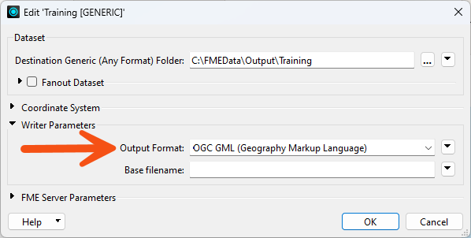

After completing this lesson, you'll be able to:
The Generic writer allows FME to reroute output to any FME writer dynamically at runtime. The Generic writer supplies the actual writer's name as an argument.
The Generic writer allows translations and transformations to be specified entirely independent of the output format and is very useful for solving problems where you know the schemas and transformations at design time, but you don't know the output format.
You use the Generic Writer the same as any other writer: by specifying the format in the Add Reader (or Generate Workspace) dialog:
There, the destination dataset is specified as a folder. FME has yet to determine the format it will write, so it will not know whether it is file-based or folder-based.
If you'd like to choose a default output format, you can set it when adding the writer.

Alternatively, you can set the output format in the Navigator window after adding the writer, or the end-user can specify it at runtime using an automatically created user parameter:

Using a Generic writer, a single writer can write any data format, with the format optionally chosen by the end-user at runtime.
Geometry
The Generic writer supports the full range of point, line, polyline, arc, ellipse, rectangle, rounded rectangle, region (polygon), text, null, and raster geometric data. Similarly, it supports the full range of attribute types. Individual writers may be unable to support all data types, so the workspace may fail if it encounters unresolvable incompatibilities.
The generic writer can write different geometry types using a single output feature type. Suppose the true writer at runtime does not allow this. In that case, FME will create separate output feature types by appending a geometry-name suffix to the base feature type, separating features with different geometries. For example, if you chose the Esri Shapefile format at runtime, and the workspace author created a single feature type called rivers to accommodate multiple geometries, FME would send any linear features to a shapefile named rivers_line.shp. FME would send any point features to rivers_point.shp.
Feature Type Definitions
Definitions of the output feature type for the Generic writer are usually explicitly specified. However, the writer also offers a Dynamic Schema setting in which FME bases the output features' definitions on schema information from the workspace's source readers.
For more information on this setting in Workbench, see About Dynamic Workspaces or the courses on this topic later in this Learning Path.
Writing to Multiple Formats
When you use the Generic Writer, it is sometimes helpful to pre-configure parameters specific to individual output formats. For example, you must specify a seed file to write a Bentley MicroStation Design file.
To do this, add a writer to a workspace. This step causes Workbench to think that there is more than one output format and forces Workbench to create a Multiwriter for the workspace. The first writer in the multi-writer will be the Generic writer, and this one should have all the output feature types. The second writer will have no feature types but will be used to communicate any format-specific writer settings to the Generic writer when FME users that format for the Generic writer.
Suppose you configure the Generic writer to write to a format requiring a filename as a dataset. In that case, the Generic writer will turn the output folder into a filename by appending a file extension to the last portion of the folder name. When format-specific settings are present, it takes this extension from the dataset specified for the specific format. It ignores the rest of the dataset.
Generic Readers and Writers only deal with a flexible format but can also be set up to be flexible with layers using a Merge Filter or Fanout.
However, each dataset FME reads must have the same attribute schema. Additionally, each dataset written receives an identical attribute schema. This part is not flexible.
Flexible attribute schemas require using either Automatic attribute definitions or a dynamic translation.